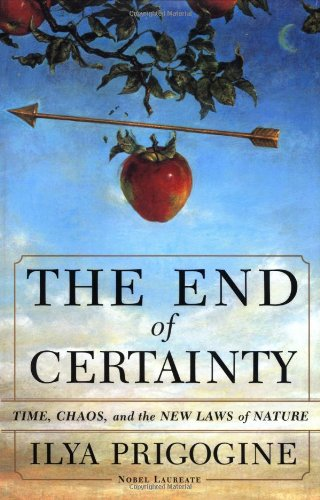

正如大家所知，代数几何是现代数学的主流。当代大多数一流的数学家都工作在这一领域。
因此如果你觉得自己天赋异禀，并在代数，几何与分析各方面都有着扎实的基础，
我建议你绝不要浪费自己的天赋： 应义无反顾的选择代数几何这一专业。
当然把代数，几何与分析这三门基础功课同时学好的人很少。
比如有些同学有着很好的分析功底，但代数中的抽象思维能力却相对显得薄弱。
如果是这样的话，我建议你选择分析方面的专业，比如：复分析，分形， 调和分析或微分方程。
如果你代数和分析都不怎么样，可却在几何方面有着良好的感觉，
要是这样的话，可以判断一下看自己是不是可以学习几何。
除以上三部分同学之外，还有这样的一部分同学：
他们对代数，分析与几何都不擅长，但却一直坚信自己在数学上仍能有所作为，
并幻想有朝一日成为中国数学界的中流砥柱。
如果你属于这部分同学中的一位的话，我建议你选择动力系统。
动力系统这一学科其实就是专门为这部分同学开设的。
当然即使是动力系统也不是人人都能学的。
因为动力系统需要大量的微积分。
可总有那么一部分同学还没来得及把极限的概念搞清楚就大学毕业了。
如果你不巧就是这样的一位同学，也就是说你大学四年压根儿就没学数学，
但仍希望自己将来能在数学上一展宏图的话，我建议你选择组合数学这一专业。
这一专业的特点就是它只用到中学的数学。
如果你在中学时参加过数学竞赛并获过奖项的话，这一学科正是你大展身手的地方。
我想大多数同学看到这儿之前已经找到了适合自己的专业了。
可若仍有人羞怯的说他在中学时早恋，因此连中学的数学也没学好，
我想告诉这部分同学不要怕。
在我们系有专门为你们开设的一个专业：统计学。
这一学科只要求懂得小学数学中的加减乘除四则运算就够了。
更重要的是，选择这一专业的大多都是女同学。
在你准确无误的把成千上万个数据加起来并娴熟的计算出他们的均值时，
你也赢得了众多师姐师妹的芳心：
短短三年的研究生生活或许能让你再次体会一次那如花美眷，似水流年的往事。。。
最后这一条是专门针对那些悲情人物的。
他们连小学的数学也没学好。
不要说把上千个数加起来，就是把两个数加起来，
对他们来说都是件很吃力的事。
然而这一切丝毫没有削弱他们对数学的一片痴情。
他们日日夜夜泡在图书馆里。
他们翻阅了所有的数学文献，却从未找到一本能读懂的。
但他们仍坚持不懈， 为的就是找到一个适合自己的专业。
他们的行为感动了上帝。
上世纪的某一天，上帝为他们创造了一台机器帮他们计算。
这就是计算机。
借助计算机，他们可以很快的进行加减乘除的运算。
这就是计算数学。raw data rae usually voluminous and confusing
they have to be suitably summerized for easy interpretation
从19世纪开始，统计学意义变为解释数据，从数据中提取信息，以便于走出最后的决策。
在此之前，人们是用一种确定性的思维看待世界。
演绎法
归纳法
逻辑上，如果\(A_2\)引起\(A_1\),那么什么引起\(A_2\)呢？于是我们要找\(A_3\)，\(A_4\)，…
现实中，引发一件事件y的因素有无所多个x,真实的关系是
\[y = f(x_1,x_2,x_3,...)\] 但是由于我们无法确知关系f，已经我们不能考虑无限多的因素，所以我们只能近似用关系 \[y = f_a(x_1,x_2,...,x_n)\]

人类所有的活动都是基于预测：上大学、工作、结婚、投资
然而未来是不可完全预测的
所以我们需要一种系统的做出正确决策的方法
statistics as a method of learning from experience and decision making under uncertainty.
如果能够量化不确定行的话，我们就能回答古典逻辑所不能回到的问题
我们能够回答yes和no之外的答案
从而我们能够提供实际的解决方案
It is truth very certain that when it is not in our power to determine what is true we ought to follow what is most probable. –Descartes
uncertainty knowledge
\(+\)
knowledge of the amount of uncertainty in it
=
usable knowledge
从亚理斯多德到19世纪，人们一直认为chance是人们认识的障碍，
由于概率的存在，使得预测不可能准确。
现在人们认识到随机性内在于所有自然现象之中
学习概率的法则，是我们理解自然届和作出最优决策（损失最小）的唯一途径
quantification of uncertainty has led to optimum decison making.
we have seen how classical physics struggled in vain to reconcile growing quantitative observaton with preconceived ideas on causality, derived from everyday experience but raised to the level of metaphysical postulates, and how it fought a losing battle against the intusion of chance.
Today the order has been reversed: chance has become the primary notion, mechanics has rexpression of its quantitative laws, and the overwhelming evidence of causality with all its attributes in the realm of ordinary experienc is satisfactorily explained by the statistical laws of large numbers.
random thinking
ability to identify important and significant problems
quick perception of what ideas can lead to fruitful results
certain amount of confidence to pursue difficult problems
chance : used to describe random phenomena
chaos : a deterministic process may exhibit randomlike behavior locally while having a global regularity
chance deals with order in disorder while chaos deals with disorder in order.
信用中介：将储蓄转化为投资，就是发放贷款。
支付中介：在村矿账户的基础上代理客户支付、兑付等。比如网银支付。
| 密钥 | 0 1 0 0 0 1 1 |
|---|---|
| 原始信息 | 1 0 1 1 0 0 1 |
| 加密信息 | 1 1 1 1 0 1 0 |
| 密钥 | 0 1 0 0 0 1 1 |
| 解密信息 | 1 0 1 1 0 0 1 |
加密、解密法则：
random sequence of numbers enable us to discover, by comparision, similar chance mechanisms in nature
the use of random numbers for solving problems in probability and statistics that are too complex for exact solution
the record of a month’s roulette playing at monte carlo can afford us material for discussing the foundations of knowledge. – Karl Pearson
正方形中异形的面积
以正放形任意垂直相交的两边为数轴的横轴和纵轴
任意选择一对随机数(x,y),x,y的值都小于b,而b大于正方形的边长
重复这个过程多次
用\(a_m\)表示随机点落在所求区域内的点的个数，\(m\)表示随机点落在正方形内的个数
按照大数定律，\(\frac{a_m}{m}\)的值就是异形边际与正方形面积的比值
贷款决策 ： 要不要给某个客户放贷款
贷后管理 ： 贷款客户是否在合理使用贷款、某个客户时候会违约
一家银行掌握了其信用卡客户的年收入（income）、月度账单余额（balance）和是否违约（default）的历史数据
现在银行获取了一个新客户，知道了他的年收入和月度账单额
请问，你如何判断这个新客户是否会违约
建立一个统计模型，根据balance（\(x_1\))和income（\(x_2\))的值来预测是否违约default（\(p\))
default的取值有两种，yes和no
logistic 模型计算每个客户违约的概率
\(P(default = yes|balance)\)
如果直接这么算 \(p = a_0+x_1 +x_2\)
那么算出来的概率可能在[0,1]之外，
所以我们要对概率函数做个变换。
\[p(x)=\frac{e^{\beta_0+\beta_1 x_1+\beta_2 x_2}}{1+e^{\beta_0+\beta_1 x_1+\beta_2 x_2}}\]
\[ log(\frac{p(x)}{1-p(x)})=\beta_0 + \beta_1 x_1 + \beta_2 x_2 \]
如果我们现在知道了\(\beta_0,\beta_1,\beta_2\)的值
那么任意来一个新客户，输入他的收入（\(x_1\))和月度账单额（\(x_2\))，我们就等算出他的违约概率\(p\)。
有了违约概率，我们就可以设定一个门限值，来判定这个客户是否会违约。
\[ p(x)=\frac{e^{\beta_0+\beta_1 x_1+\beta_2 x_2}}{1+e^{\beta_0+\beta_1 x_1+\beta_2 x_2}} \]
\[l(\beta_0,\beta_1,\beta_2) = \prod_{i:p_i=1}p(x_i) \prod_{j:p_j=0} (1-p_j)\]
\(\beta_0=-10.869,\beta_1=0.00574,\beta_2=0.000003\)
客户年收入为40000元，信用卡月度账单额为1500
其违约概率为
\[\hat{p}(x)=\frac{e^{ -10.869 + 0.00574 \times 1500 + 0.000003 \times 40000 }}{1+e^{ -10.869 + 0.00574 \times 1500 + 0.000003 \times 40000 }} = 0.1053636\]
all knowledge is ,in final analysis, history.
all sciecne are, in the abstract, mathematics.
all judgements are, in their rationale, statistics.
(Rao 1997) (James, Hastie, and Tibshirani 2013)
James, Gareth, Trevor Hastie, and Robert Tibshirani. 2013. An Introduction to Statistical Learning. Springer New York.
Rao, Calyampudi Radhakrishna. 1997. Statistics and Truth: Putting Chance to Work. WORLD SCIENTIFIC.